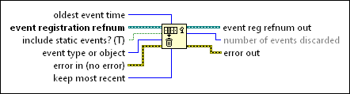

Flush Event Queue Function
Owning Palette: Events Functions
Requires: Base Development System
Discards the least recent notify events from one or more event queues. If the event queue that you want to discard includes filter events, this function stops at the first filter event in the queue and discards only the events that occurred previous to the stop.

 Add to the block diagram Add to the block diagram |
 Find on the palette Find on the palette |